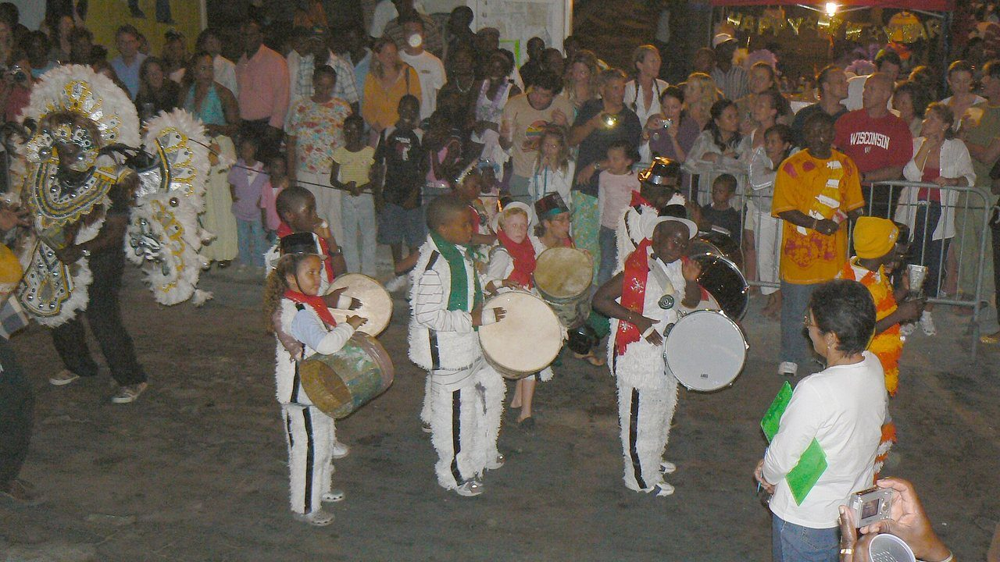

Race, Junkanoo, Nassau

Behind
Best +0:01
371W
Target 418 W-47 W
- Cadence
- 87rpm
- Heart
- 140bpm
- Speed
- 26.5km/h
Work6 of 22
0:04
Next: · 0:10 at level 10
+2.0%
11 m climbed
4.76 km
24
Resistance / 32
Solo races your best-time ghost: position reads Ahead or Behind, and solo alone gets a Pause button. Frozen at 11:21.